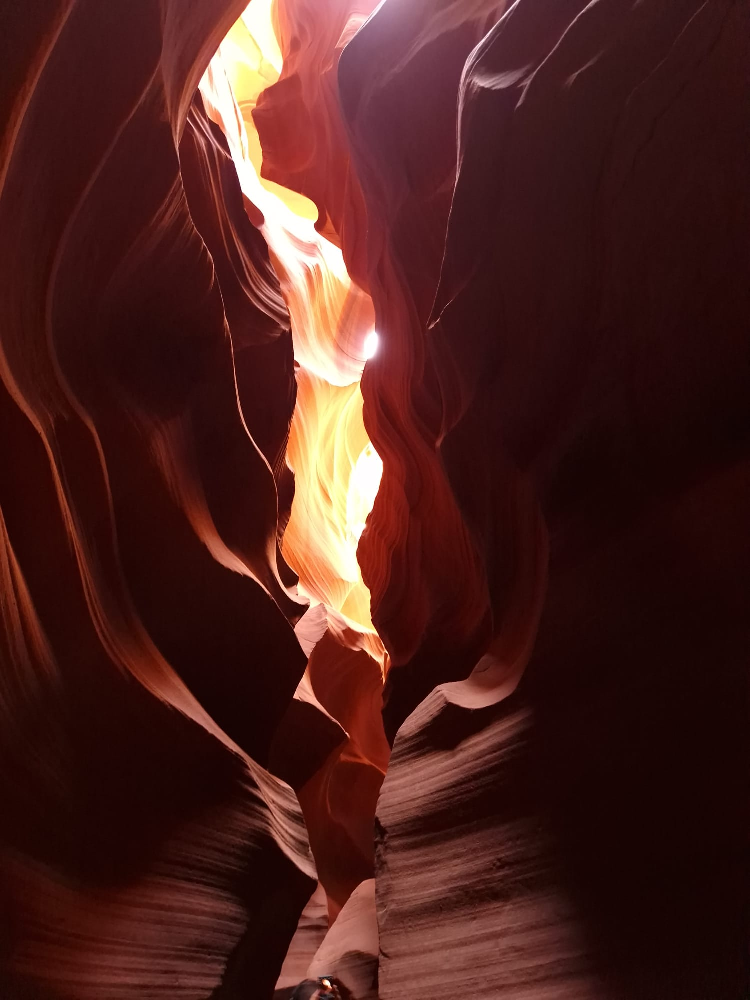

Antelope Canyon
Der neue Tag begann mit viel Sonnenschein und einer ca. 3 St√ºndigen Fahrt nach Page, Arizona. Unterwegs machten wir noch einen kurzen Stopp am Glen Canyon Dam. Danach fuhren wir weiter nach Page in den Walmart, wo wir zuerst uneren Wasservorrat auff√ºllten. Anschliessend gab es noch etwas kleines zum Mittagessen, bevor wir dann zu unserem Hotel fuhren. Leider nahmen die das mit der Check-in Zeit soo genau, dass man vor 15 Uhr t√§ts√§chlich keine M√∂glichkeit hatte, das Zimmer zu beziehen oder die Koffer zu deponieren. Um die Zeit bis dahin etwas zu √ºberbr√ºcken, fuhren wir noch kurz zu einem Aussichtspunkt, von wo aus man eine tolle Sicht auf den Glen Canyon Dam hat. Nach ein paar geknipsten Fotos fuhren wir zur√ºck zum Hotel, denn die Temperatur im Freien war kaum auszuhalten. Kurz nach 15 Uhr konnten wir dann endlich unser Zimmer beziehen. Nachdem wir alles im Zimmer verstaut hatten, setzten wir uns erneut ins Fahrzeug und fuhren zum Horseshoe Bend, wo wir erneut fasziniert von der Natur waren. Anschliessend gab es noch etwas zu essen, bevor wir dann einigermassen fr√ºh ins Bett h√ºpften. Der n√§chste Morgen begann sehr fr√ºh f√ºr uns, denn um 08.30 Uhr startete bereits die Tour zum Antelope Canyon. Vorher mussten wir aber bereits unser Zimmer auschecken und etwas "zm√∂rgele". Die Tour zum Antelope Canyon startete mit einer sehr holprigen Fahrt auf einem Jeep, welcher einen, vermutlich selbst gebastelten, Aufbau hatte, auf welchem mehrere Personen transportiert werden konnten. Wir fuhren gut 15 Minuten √ºber Sand bis zum Eingang des Canyons. Dort wurden wir von einem atemberaubenden Naturschauspiel erwartet. Man konnte sich kaum entscheiden wohin man zuerst schauen sollte. Es war einfach nur " Woow"! Die Sonnenstrahlen drangen in die Spalten des Canyons hinein, was den Canyon in einem sch√∂nen Orange erstahlen lies. Die Farbenpracht und auch die Struktur der Felsen war einfach der Wahnsinn. Unser Tourguide erz√§hlte und zeigte uns nicht nur spannende Dinge, nein er war auch gleich zum Fotografen mutiert. Dabei stellte sich heraus, dass er die Kameraeinstellungen des Mobiltelefons besser im Griff hatte als Mimi, welcher das Telefon geh√∂rtüôà Leider war der Fussmarsch durch den Canyon viel zu kurz und somit waren wir nach ca. 40 Minuten bereits am Ende angekommen. Danach ging es dieselbe Holperstrecke mit dem Jeep zur√ºck. Die Tour im Antelope Canyon war bisher sicher eines der grossen Highlights und wir k√∂nnen diese Tour auf jeden Fall weiterempfehlen. Das muss man einfach live gesehen haben, wenn man hier ist!  Nach diesem wunderbaren Erlebnis hiess es erneut mehrere Stunden Autofahren, denn nun stand der Grand Canyon auf dem Programm.